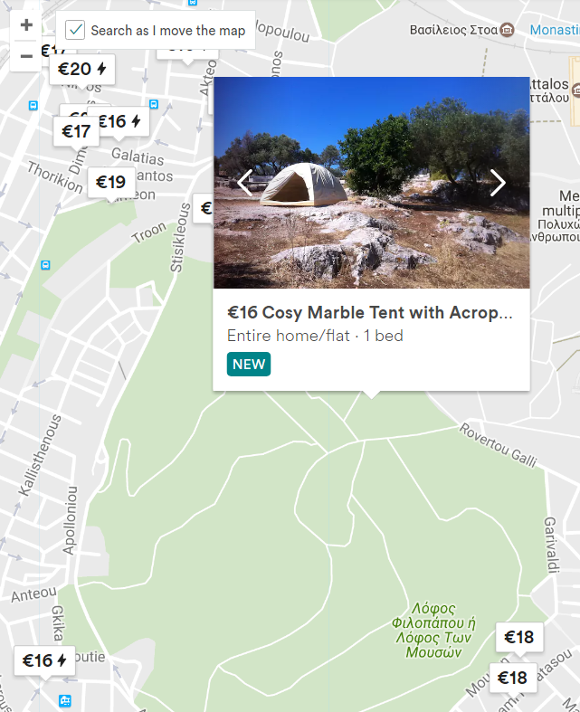
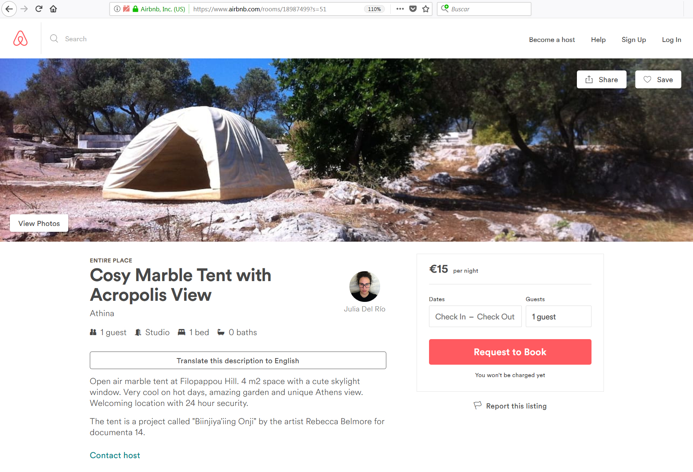
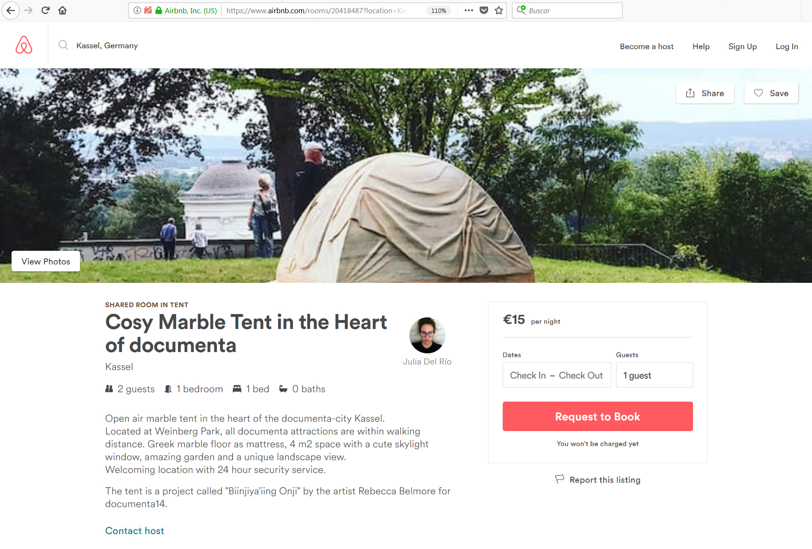

juliadelrioeria@gmail.com

.
Julia del Río created two ads on Airbnb and dealt with users reactions of a documenta 14 art piece. The piece is a marble tent placed on public open space. The tent is a project called “Biinjiya’iing Onji” by the artist Rebecca Belmore. Both ads constitute “Cosy Marble Tent”, a project which explores Airbnb online marketplace as space for artistic creation.
Athens

Athens Airbnb add screenshot
Kassel

Kassel Airbnb add screenshot